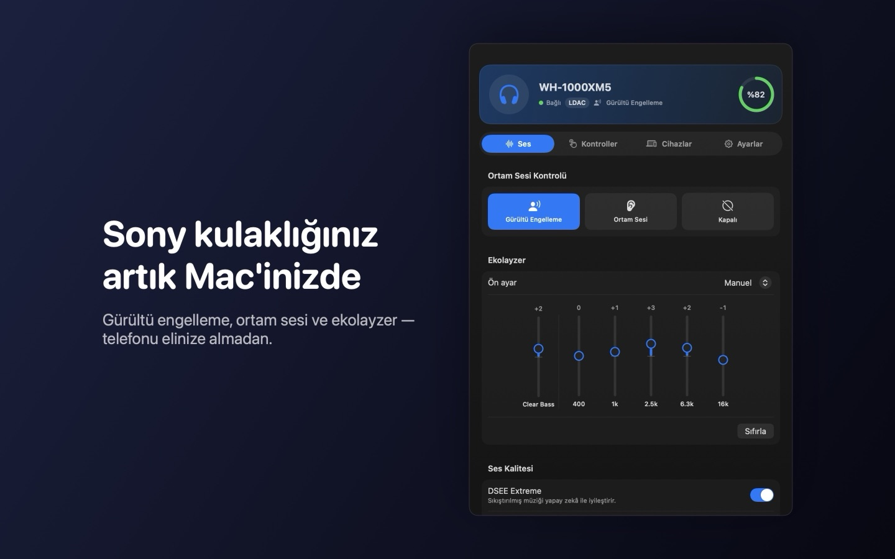
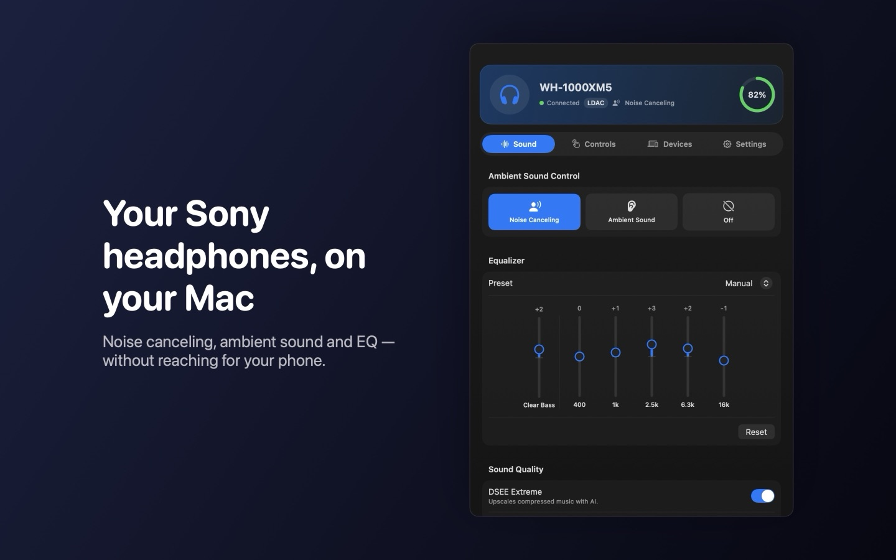

Kulaklığınız, Mac'inizde.Your headphones, on your Mac.
Gürültü engelleme, ortam sesi, ekolayzer ve cihaz geçişi — telefonu elinize almadan, doğrudan menü çubuğundan. Noise canceling, ambient sound, equalizer and device switching — straight from the menu bar, without reaching for your phone.


Gürültü kontrolüNoise control
Gürültü engelleme, ortam sesi ve seviye ayarı tek tıkla. Noise canceling, ambient sound and its level in one click.EkolayzerEqualizer
Hazır ayarlar veya bas'tan tize kendi ayarınız. Presets or your own curve, from bass to treble.CihazlarDevices
Sesi Mac ile telefon arasında tek tıkla taşıyın. Move audio between your Mac and phone in one click.DestekSupport
Bir sorun mu yaşıyorsunuz ya da öneriniz mi var? Bize yazın; genellikle 1–2 iş günü içinde yanıtlıyoruz.
Having a problem or have a suggestion? Write to us; we usually reply within 1–2 business days.
ruzgarnos@gmail.comYazarken Mac modelinizi, macOS sürümünüzü ve kulaklık modelinizi belirtirseniz daha hızlı yardımcı olabiliriz. Uygulamada Ayarlar → Hakkında → “Gelişmiş: bağlantı günlüğü” içeriğini de ekleyebilirsiniz.
Please include your Mac model, macOS version and headphone model. You can also paste the contents of Settings → About → “Advanced: connection log”.
Sık sorulan sorularFrequently asked questions
Hangi kulaklıklar destekleniyor?Which headphones are supported?
Sony WH-1000XM4, WH-1000XM5 ve WH-1000XM6. Uygulama yalnızca kulaklığınızın desteklediği ayarları gösterir.
Sony WH-1000XM4, WH-1000XM5 and WH-1000XM6. The app only shows the settings your headphones support.
Uygulama kulaklığı bulamıyor.The app can't find my headphones.
- Kulaklığı önce Sistem Ayarları → Bluetooth'tan Mac'e eşleştirin ve bağlayın.
- İlk açılışta macOS'un sorduğu Bluetooth iznine “İzin Ver” deyin. Yanlışlıkla reddettiyseniz: Sistem Ayarları → Gizlilik ve Güvenlik → Bluetooth.
- Telefonunuzda kulaklığın kendi uygulaması açıksa kapatın; aynı anda yalnızca bir uygulama kulaklığı kontrol edebilir.
- Uygulamadaki “Yeniden tara” düğmesine basın.
- Pair and connect the headphones in System Settings → Bluetooth first.
- Allow Bluetooth access when macOS asks. If you denied it: System Settings → Privacy & Security → Bluetooth.
- Close the headphones' own app on your phone; only one app can control the headphones at a time.
- Click “Scan again” in the app.
Kulaklığım yok, uygulamayı deneyebilir miyim?I don't have the headphones yet. Can I try the app?
Evet. Kulaklık bağlı değilken açılan ekranda “Demo modunu dene”ye tıklayın; tüm arayüz örnek verilerle açılır.
Yes. On the “Not connected” screen, click “Try demo mode” to explore the whole interface with sample data.
Klavye kısayolu nedir?What is the keyboard shortcut?
Varsayılan olarak ⌃⌥⌘N, gürültü engelleme → ortam sesi → kapalı arasında geçiş yapar. Ayarlar sekmesinden değiştirebilirsiniz.
By default ⌃⌥⌘N cycles Noise Canceling → Ambient Sound → Off. You can change it in the Settings tab.
Verilerim toplanıyor mu?Do you collect my data?
Hayır. Uygulama internete bağlanmaz ve hiçbir veri toplamaz. Ayrıntılar için gizlilik politikası.
No. The app never connects to the internet and collects no data. See the privacy policy.